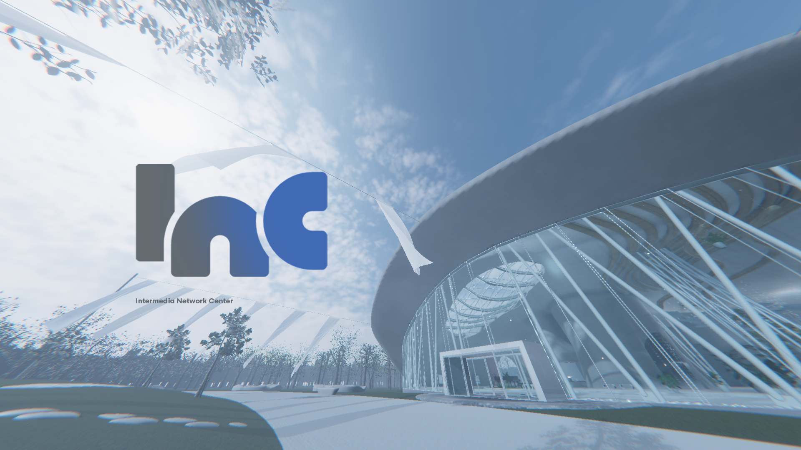
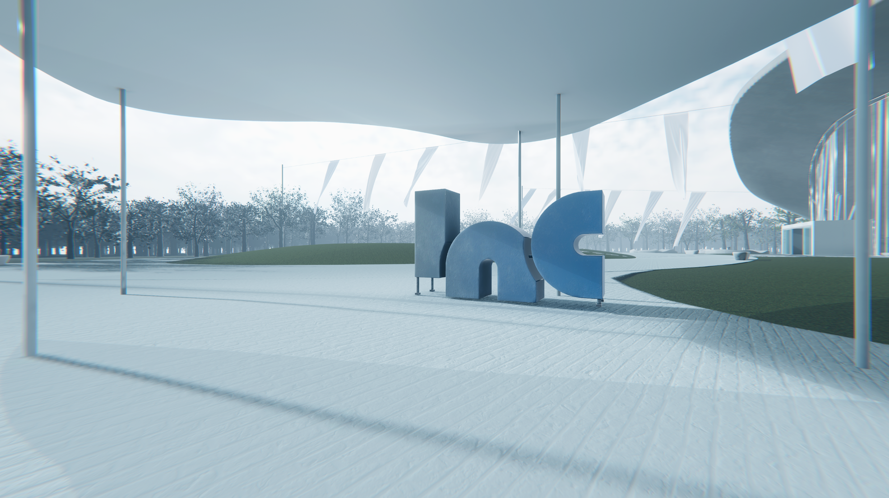

Menu
Language

VRChat 上の常設 Public ワールド。学術・技術・芸術・音楽・文化に関心のある人が落ち着いて交流できる場を目指しています。主な対象は日本語話者ですが、英語話者も歓迎しています。

日本語話者向け集会場「INC」公式グループです。INC（Intermedia Network Center）「INC」に関するご質問・ご要望等はリンクにある運営者のXアカウントのDMにご送付ください。
INCでは音楽・トーク・展示などの公演・イベントを随時開催予定です。このページでは開催予定のイベントをまとめて確認できます。
INC のドキュメント、利用案内、施設ガイド、イベント関連の資料をまとめて確認できます。